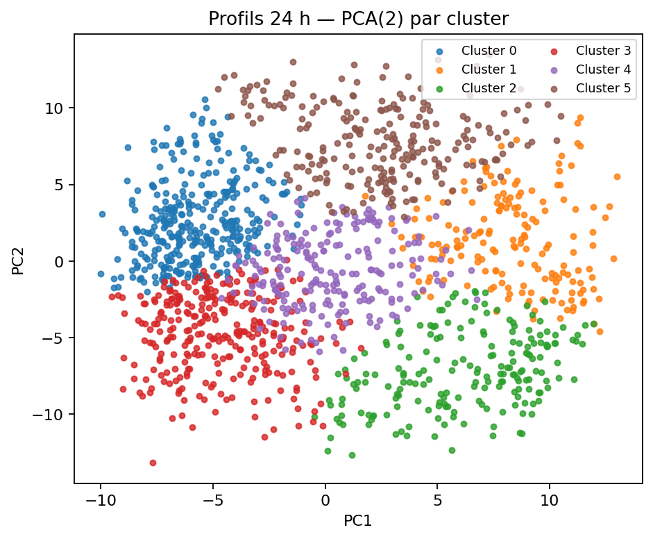

Stations & profils¶
Cette page permet une exploration fine station par station (tables filtrables) et présente des profils comportementaux du réseau via clustering.
1) Table exploratoire (7 j / 30 j)¶
- Colonnes : ID, nom, capacité estimée, % pénurie / % saturation (7 & 30 jours), volatilité (σ vélos), couverture, distance au centre, cluster.
- Tri/filtre : top pénuries / saturations, variabilité, cluster, zone.
Téléchargements :
- 7 jours : ../../assets/tables/network/stations/station_stats_7d.csv
- 30 jours : ../../assets/tables/network/stations/station_stats_30d.csv
- Clusters par station : ../../assets/tables/network/stations/station_clusters.csv
- Distribution des clusters : ../../assets/tables/network/stations/cluster_distribution.csv
- Centroïdes 24 h (CSV) : ../../assets/tables/network/stations/cluster_centroids_24h.csv
- Résumé clustering (JSON) : ../../assets/tables/network/stations/clustering_summary.json
2) Fiches station (liens depuis la table)¶
Chaque station peut avoir une fiche dédiée (optionnel) :
Sparkline 7 j, profil 24 h typique (médiane / 15 min), heatmap h×j récente, et indicateurs (pénurie/saturation 7 & 30 j, volatilité, couverture, événements).
3) Carte des clusters¶
Couleur = cluster ; taille ≈ capacité estimée.
4) Profils 24 h — centroïdes par cluster¶

5) Projection PCA(2) des profils¶

La PCA ne sert qu'à visualiser la séparation des groupes ; le clustering se fait sur l’espace complet (96 points).
6) Sélection d’exemples (volatility)¶
../../assets/tables/network/stations/selection_volatility.csv
7) Clustering — méthodologie détaillée¶
Objectif. Regrouper les stations par similarité d’usage pour révéler des archétypes (résidentiel, pôle d’emplois, gares, loisirs…).
Variables (features).
- Profil 24 h (96 pas de 15 min) : médiane d’occupation bikes / capacity_est sur ~28 jours, centré-réduit.
- Amplitude/variabilité : écart-type quotidien, plage min-max normalisée.
- Asymétries temporelles : ratios matin/soir, semaine/week-end.
- Contexte léger (optionnel) : capacité, distance centre, altitude.
Pré-traitement. - Standardisation (moyenne 0, écart-type 1) sur les profils. - PCA (2D) uniquement pour la figure — pas pour l’algorithme.
Algorithmes.
- K-Means par défaut, k choisi empiriquement (coude) + Silhouette / Davies-Bouldin.
- HDBSCAN en option quand la densité varie beaucoup (gère le bruit sans imposer k).
Attribution & stabilité.
- Scores internes : Silhouette = 0.179, Davies-Bouldin = 1.564 (k=6, n=1458).
- Bootstrap par semaines pour vérifier la stabilité (optionnel).
- Centroïdes publiés (courbes moyennes par cluster) comme comportements-types.
- Signalement des stations frontières (incertitude) possible.
Étiquettes interprétables (exemples).
- Résidentiel nocturne : haut la nuit, baisse le matin, remonte le soir.
- Pôle d’emplois : bas la nuit, pic d’arrivée le matin, vidage fin de journée.
- Transport / gares : fortes oscillations synchronisées aux pointes.
- Touristique / loisirs : week-end marqué, milieux de journée élevés.
Limites. Le clustering décrit des usages, il ne prédit pas. Les groupes évoluent avec la saison, travaux, événements — recalcul périodique prévu.
8) Mémo technique¶
- Source :
docs/exports/events.parquet, pas de 15 min. - Capacité estimée : priorité à
capacity_src, sinon quantile 0.98 de(bikes + docks_avail)si dispo, sinon 0.98 debikes. - Pénurie / Saturation :
bikes == 0/ (docks_avail == 0oucapacity - bikes == 0). - Couverture :
#bins observés / #bins attendussur 14 j. - Volatilité : σ des vélos par station sur la journée locale, médiane des stations.